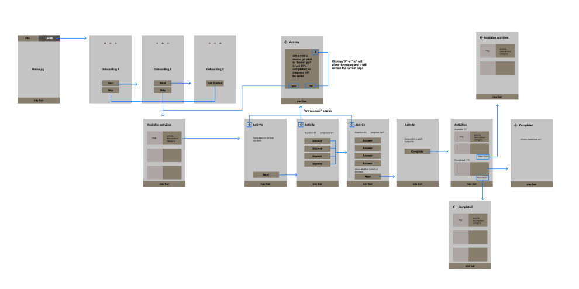
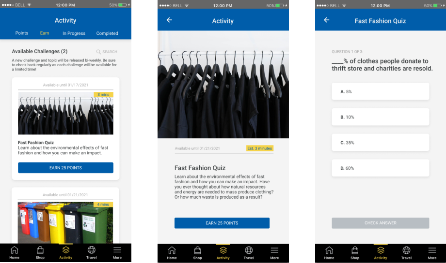

Ideation, wireframe, and communication
As a team, we grouped and combined ideas together to form our solution. After, I quickly sketched out potential layouts of the solution and generated a set of 20+ wireframes. As the hacking phase was only 36 hours long, my team and I worked simultaneously together to ensure the idea was submitted by the deadline. A challenge occurred during the wireframing stage, where the developers were unsure of the flow of interactions presented in my sketches. Understanding that these developers have a different background than I do, I used a combination of wireframes and flowcharts to communicate how and where the user would click to proceed to the next screen.

From our research, we found that RBC has at least 3 different apps in the app store. This led us to create an extension of the app in order to reduce the amount of apps that users have to download. As it would be an extension of the app, I referenced the current RBC Rewards App while sketching, wireframing, and creating mockups to ensure this added feature is consistent with the rest of the app.
